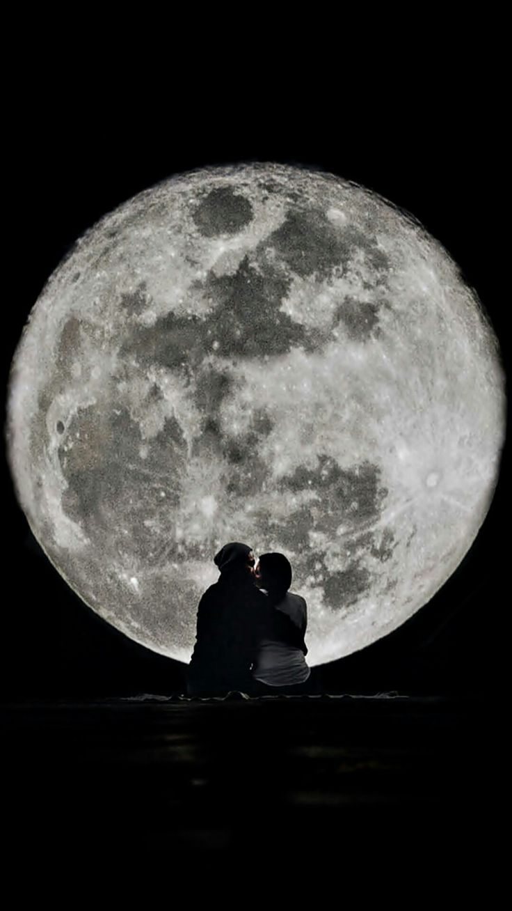

🤍حِينَ بَدَأَ كُلُّ شَيْءْ🤍
2͎1͎\͎1͎0͎\͎2͎0͎2͎4͎
The beginning

f

February 10th, 2024
We became friends—not instantly, not dramatically, just effortlessly. She was chaos and light, and I was quiet and steady. Somehow, we just… fit.
She’d text me random questions:
"If you could be anywhere right now, where would you be?"
And I’d reply:
"Probably home. It’s comfortable."
Then she’d send,
"Wrong answer. The correct answer is: anywhere but home, with me."
I should’ve known then. I should’ve seen the way she was pulling me into her world, piece by piece.
February 14th, 2024
Valentine’s Day.
I wanted to tell her today. That she wasn’t just my best friend. That when she laughed, the world made sense. That her voice was my favorite sound. That I was in love with her.
But before I could, she told me about him!

The guy she liked. The one who made her heart race. And it wasn’t me.
I smiled. I listened. I said all the right things. And later that night, I wrote all the wrong ones."
February 20th, 2024
She doesn’t know. She’ll never know. And maybe that’s for the best.
She calls me her “favorite person.” I wish she knew what that did to me.
February 25th, 2024
She’s happy. That should be enough, right?
If you love someone, you want them to be happy—even if their happiness doesn’t include you.
People say, "Time heals everything."
But people lie.

🌹❤
March 1st, 2024
I saw her today, standing in the rain, laughing like she belonged in it. And suddenly, it hit me:
She’s not mine to love. She never was.
Maybe one day, I’ll meet someone whose laugh feels like home, who looks at me the way I look at her. Maybe.
Until then, I’ll keep writing.
For her. For me. For the love story that never was.
"For the longest time, I thought this story was about her. But maybe it was about me all along—about learning to love, to lose, and to let go.
She was never mine to keep. But the love? That was real. And that’s enough.
So this is my final entry. Not because the story ends here, but because it’s time to start a new one."